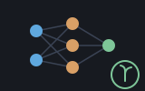

A reckoner seed: neural's feed-forward net and scaler, as dicts — machines/seeds/seedneural.shoddy

seedneural bridges neural: build a
net, train it either way, scale inputs, predict, score the result, and read
or write a weight file — entirely on the stack. Per R4.16 there is no
NETWORK cell at the keyboard: a Net is a dict, the same
LIST-of-PAIR shape seeddict already established —
{ ("w1" matrix) ("b1" list) ("w2" matrix) ("b2" list) } — a
Scaler is { ("center" list) ("spread" list) }, and
a Plan is
{ ("task" str) ("rate" n) ("moment" n) ("batch" n) ("epochs" n) }.
The two constructors and the two training words are RckTouch: the first pair
draw initial weights from Rnd and the second shuffle the row
order once an epoch, so two calls with the same arguments do not answer the
same net — exactly as typing the same line twice at a calculator prompt need
not. Everything else here is pure.
A net is four arrays of weights, and a session that has to type them out is a session that will not train one. What this seed buys is that the whole loop — build, train, predict, score, save, load back — happens at the prompt, on cells the stack already understands, with every shape mismatch answered as a refusal instead of ending the session.
NEURALTRAIN is regression: scalar targets, plain gradient
descent, the seven arguments spread across the stack.
NEURALFIT is the general form — either output head, target
vectors rather than single numbers, and momentum — driven by a plan
cell, because five hyperparameters in a fixed order on the stack is exactly
the arrangement nobody can read back a line later. Hiding either would make
the dictionary lie about the machine.
The report quotation both words take is [ Drop Drop ] and can
be nothing else: the engine performs no effect, so per-epoch progress has
nobody to report to. What a session sees is the trained net on the stack and
NEURALMSE or NEURALCLASSACCURACY to judge it by,
which is the same information one line later.
neural is dimension-checked rather than forgiving. VSub and
MatVec abort on a mismatch, the mini-batch step divides by the
batch length and takes First of the batch's gradients, and the
epoch step divides by the batch size. So a row whose width is not the net's
input count, a target vector that is not its output count, a batch size of
zero, an empty training set — each is refused here before the machine is
entered rather than after it has aborted.
One of those refusals is not about an abort at all. A batch size larger than the row count makes the epoch step tile zero mini-batches: it trains on nothing and answers the net unchanged, which reads as training that did not work rather than as a number that was wrong. That is worse than an abort, and it is refused for that reason.
NEURALLOAD guards the same class of quiet failure from the
other side. Val is strtod and answers 0 for
anything it cannot read, so without an IsNumeric pass a file of
prose would load as a net of zeros and predict confidently.
An earlier pass left NEURALTRAIN out, recording that folding
the epoch loop from inside a registered word corrupted the engine's own
state once epochs reached one. It does not, and there is no such fault: the
epoch fold, the shuffle, and the report quotation invoked through
Call all thread correctly through a dictionary word's dispatch,
at one epoch and at five hundred, on a dictionary of five hundred words.
tst/seedneuraltest.shoddy trains a net to a stated MSE bound and
then goes on evaluating — the test that would have settled it, now standing
as an assertion rather than as a comment somebody once wrote.
Both file formats are bridged, and the binary one took a
runtime change to get there. NEURALSAVE and NEURALLOAD
carry the text pair, because NetSave/NetLoad are
WriteLines/ReadLines underneath and this seed can
reimplement those over TRYWRITEFILE/TRYREADFILE the
way seedfile already does. The binary pair —
NetSaveBin, NetLoadBin, ModelSave and
ModelLoad — could not be reached that way, and an earlier pass
left them out saying so.
What stopped them was never the handle. These words open and close inside
their own bodies, so nothing R3.5(b) is about ever happens: no handle reaches
the stack and no UNDO can strand one. It was that there was no way
to ask. NetLoadBin aborts on a short or wrongly-tagged
file with the handle still open; nothing could learn a file's size or
its magic number without opening it first; and BOpen is
open-or-create, so the very act of checking left an empty file behind.
TryBOpen is the runtime change that answered all three — an
existing-file-only open that reports failure as a Result — and
the six words below are built on it, reusing
neural's own record layout so the format stays one
definition and files move both ways bit for bit.
A model is a cell kind here, like a net, a scaler and a
plan: { ("net" net) ("task" str) ("prep" scaler) }. It has a
constructor and a predict of its own rather than only a save and a load,
because a model you can write to disk and read back but not predict with is
not a bridged feature. NEURALMODELPREDICT takes raw
inputs and does the scaling itself, which is the whole reason
neural has a Model type at all.
A line fitted, then a two-class problem, both from the prompt. Both
constructors draw from Rnd and both training words shuffle, so
the figures below are from a session that typed 7 SEED first;
without that they will differ in the last digits and not in the shape.
> 1 5 1 NEURALNEW "N" STO
ok: N
[ empty ]
> "N" RCL { { 0 } { 0.25 } { 0.5 } { 0.75 } { 1 } } { 1 1.5 2 2.5 3 } 0.1 5 500 NEURALTRAIN "T" STO
ok: T
[ empty ]
> "T" RCL { 0.5 } NEURALPREDICT
x: 2.021778542
> CLEAR "T" RCL { { 0 } { 0.25 } { 0.5 } { 0.75 } { 1 } } { 1 1.5 2 2.5 3 } NEURALMSE
x: 0.0004107328943The truth at x = 0.5 is 2, and the net has found it to three places from five rows. Now the classifier, which wants one-hot targets and a plan:
> CLEAR 1 6 2 NEURALNEWSCALED "C" STO 0.5 0.9 6 400 NEURALCLASSPLAN "P" STO
ok: C
ok: P
[ empty ]
> "C" RCL "P" RCL { { 0 } { 0.2 } { 0.4 } { 0.6 } { 0.8 } { 1 } } { { 1 0 } { 1 0 } { 1 0 } { 0 1 } { 0 1 } { 0 1 } } NEURALFIT "F" STO
ok: F
[ empty ]
> "F" RCL { 0.9 } NEURALCLASSOF
x: 2
> CLEAR "F" RCL { 0.9 } NEURALPROBS
x: { 1.220785985e-08 0.9999999878 }And the guards, which are the point of the seed rather than its housekeeping:
> "N" RCL { { 0 } { 0.5 } } { 1 2 3 } 0.1 1 5 NEURALTRAIN
?: NEURALTRAIN: 2 ROWS AND 3 TARGETS — THEY MUST PAIR UP
> "N" RCL { { 0 } { 0.5 } } { 1 2 } 0.1 9 5 NEURALTRAIN
?: NEURALTRAIN: BATCH MUST BE A WHOLE NUMBER FROM 1 TO 2, THE ROW COUNT
> 5 4 NEURALONEHOT
?: NEURALONEHOT: NEEDS A CLASS FROM 1 TO N, AND AN N OF 1 OR MORE| Word | Description |
|---|---|
| NEURALNEW ( ni nh no -- net ) | A new net: ni inputs, nh hidden units, no outputs, small random weights. Refuses unless all three are whole numbers of 1 or more. |
| NEURALNEWSCALED ( ni nh no -- net ) | The same, with Xavier-scaled weights and zero biases — the initialization a wide layer needs if its units are to differentiate in this lifetime. |
| NEURALTRAIN ( net xs ys lr batch epochs -- net ) | Train net on the rows of xs against the single-number targets ys: learning rate lr, mini-batches of batch rows, epochs passes over the data, shuffled each pass. |
| NEURALREGRESSPLAN ( lr mu batch epochs -- plan ) | A training plan for the regression head: a dict with task, rate, moment, batch and epochs. mu is the momentum, and 0 makes this plain descent. |
| NEURALCLASSPLAN ( lr mu batch epochs -- plan ) | The same for the classification head, which reads the outputs through NEURALSOFTMAX and wants one-hot targets. |
| NEURALFIT ( net plan xs ys -- net ) | Train net on the rows of xs against the target VECTORS ys, following plan. A classify plan wants one-hot targets (NEURALONEHOT); a regress plan wants each value in a one-entry list. |
| NEURALPREDICT ( net x -- y ) | The net's scalar output for input x. |
| NEURALPROBS ( net x -- list ) | The net's outputs for x read through the classify head: probabilities that sum to 1, one per class. |
| NEURALCLASSOF ( net x -- k ) | Which class the net picks for x: the 1-based position of its largest output. |
| NEURALSOFTMAX ( list -- list ) | A list of scores as probabilities that sum to 1. Refuses on an empty list. |
| NEURALARGMAX ( list -- k ) | The 1-based position of the largest value. Refuses on an empty list. |
| NEURALONEHOT ( k n -- list ) | A target vector of n entries: 1 in position k, 0 everywhere else. Refuses unless k is a whole number from 1 to n. |
| NEURALMSE ( net xs ys -- n ) | Mean squared error over the rows of xs and the single-number targets ys. |
| NEURALACCURACY ( net xs ys pctclose -- n ) | The fraction of rows the net predicts within pctclose of the target — 0.1 for within ten percent. |
| NEURALLOGLOSS ( net xs ys -- n ) | Mean cross-entropy over the rows of xs and the one-hot targets ys. |
| NEURALCLASSACCURACY ( net xs ys -- n ) | The fraction of rows whose largest output sits where the one-hot target's 1 is. |
| NEURALSCALERFIT ( xs -- scaler ) | A scaler that centres and spreads xs's columns to mean 0: a dict with center and spread. Refuses on an empty list. |
| NEURALSCALERAPPLY ( scaler x -- x2 ) | x, centred and scaled by scaler. Refuses unless x has as many entries as the scaler was fitted with. |
| NEURALSAVE ( net path -- ok ) | Write the net's weights to a text file, one number a line, in neural's own order; True on success. |
| NEURALLOAD ( path ni nh no -- net ) | Read a weight file back into a net of ni inputs, nh hidden units and no outputs. Refuses unless the file reads, holds nothing but numbers, and holds exactly as many as that architecture needs. |
| NEURALSAVEBIN ( net path -- ok ) | Write the net to a binary file — bit-exact, and self-describing, so NEURALLOADBIN needs no architecture arguments. True on success. |
| NEURALLOADBIN ( path -- net ) | Read a binary weight file back into a net. Refuses unless the file opens, carries the right marker, and is exactly the size its own header claims. |
| NEURALMODEL ( net task prep -- model ) | A model: the net, the task it was fitted for ("regress" or "classify"), and the scaler its inputs were scaled with. NEURALMODELPREDICT takes raw inputs, so the scaling cannot drift away from the net. |
| NEURALMODELSAVE ( model path -- ok ) | Write a whole model — weights, task and scaler — to one binary file. A different marker from NEURALSAVEBIN's, so the two formats can never be mistaken for one another. True on success. |
| NEURALMODELLOAD ( path -- model ) | Read a whole model back. Self-describing, so no architecture arguments. Refuses a file NEURALMODELSAVE did not write. |
| NEURALMODELPREDICT ( model x -- list ) | The model's outputs for raw, unscaled inputs x: scaled by the model's own scaler and read through its own task. The word to predict with once a model is loaded. |
| User | How | |
|---|---|---|
| halifax | The calculator's network words — both training paths, the classifier's readers and scorers, the scaler, both weight file formats, and the whole model. |
A mill claims this seed by folding RckSeedNeural over its
reckoner state, which is all halifax does.
| Machine | Why | |
|---|---|---|
| neural | The domain this seed bridges: Net, NetNew, NetOut, Scaler, ScalerFit, ScalerApply. | |
| matrix | The Matrix cell a net's weight layers already are. | |
| cuttle | The Cell type every bridged word reads its arguments from and answers into. | |
| reckoner | RckReg and the argument readers every registered word is built from. | |
| seq | List plumbing under the net/scaler dict converters. | |
| str | Splitting and joining the lines of the text weight file, so
NEURALSAVE and NEURALLOAD need no aborting file
word. |